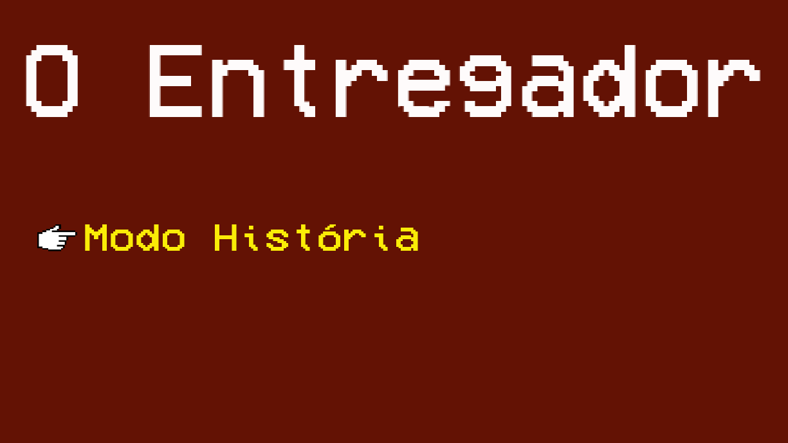
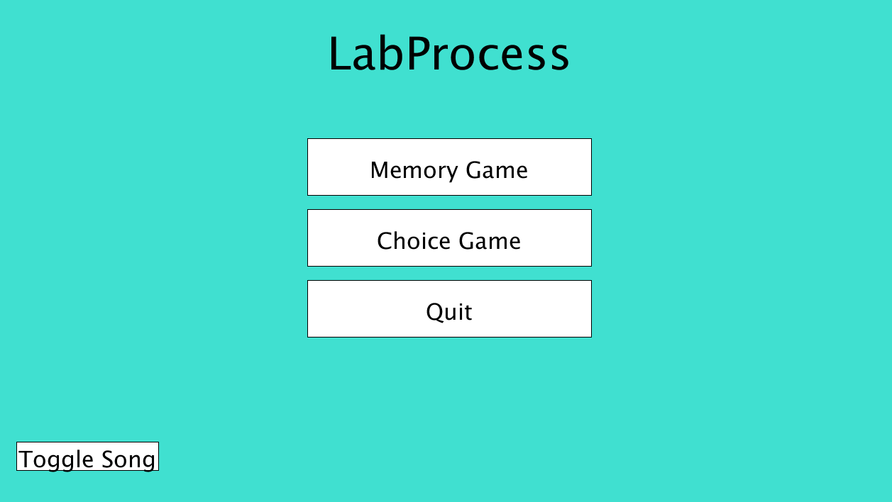
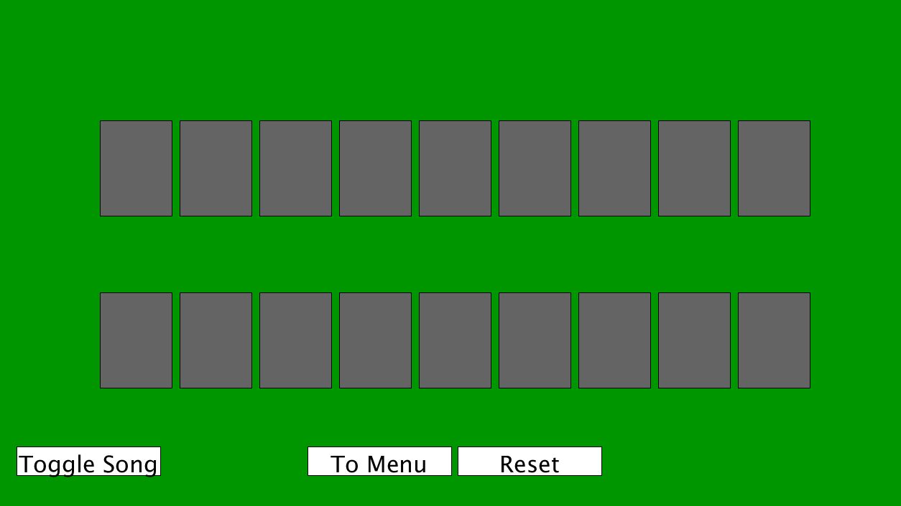
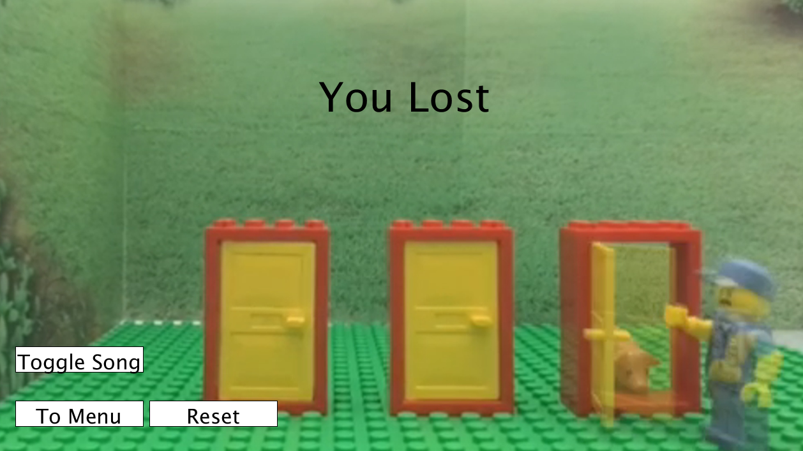

Nessa página eu apresentarei os principais trabalhos feitos durante o primeiro Periodo
Modelagem de Fenomenos Fisicos
Modelagem foi uma materia na qual não tivemos muitos trabalhos práticos como as outras, entretanto
tivemos vários exercicios e um notebook bem grande com todo o conteudo da matéria
Vimos matérias relacionadas ao calculo e a matemática, como Derivadas e integrais
Descoberta e Evolução da Computação
Nessa disciplina vimos muito sobre a história da computação e com muitos trabalhos durante as aulas, mas um dos
maiores e principais trabalhos foi o TDE 2 sobre informação e pandemias
Experiencia Criativa
Tivemos 3 principais trabalhos. um feito em construct, outro feito em processing e um ultimo feito em Visual Studio
O Entregador
Internamente conhecido como Doofi, esse trabalho foi um jogo em construct 2, desenvolvido por uma equipe de 6 pessoas.
O jogo acompanha a história do entregador, que tenta fazer sua vida no meio de um mundo invadido por aliens sem empregos
Lab Process
Esse foi o trabalho no qual desenvolvi tudo do 0, desde a classe dos botões até os vídeos do jogo de escolhas e as cartas do jogo da memória.
Nesse experimento o jogador pode jogar um jogo da memória ou um jogo de escolhas, Duas ideias que aproveitam o conceito de imagem e vídeo dentro da IDE Processing
Menu
Jogo da Memoria
Jogo de escolhas
The Game
The game (como é chamado internamente) é um jogo ainda sem nome feito com windows forms e visual studio. No jogo você assume o papel de
um investigador tentando decifrar um assasinato não há nenhuma screenshot disponivel pois ainda não está finalizado
Filosofia
Em filosofia todos os trabalhos foram muito similares eles incluiam ler um texto filosofico e fazer um fichamento a partir disso.
O Ultimo trabalho foi a apresentação de um seminário
Raciocinio Algoritmico
Durante a matéria de R.A tivemos 3 trabalhos principais, cada um em detalhes pode ser lido ao lado
os trabalhos eram em trios e foram desafios muitos bons durante o semestre
Veja aqui imagens e resumos dos trabalhos:
A INFORMAÇÃO EM TEMPOS DE PANDEMIA
RESUMO
Desde a peste bubônica, conhecida como a primeira pandemia, a humanidade vem evoluindo consideravelmente, passando de relatos escritos sem normas para relatos uniformizados e centralizados amplamente divulgados, exames em massa, utilizando a computação para divulgar e documentar dados necessários para pesquisas e elaboração de vacinas.
Palavras-chave: pandemias, dados, relatos, documentar
O Entregador

Lab Process
.


The Game
TDE Paulo Freire
TDE René Descartes
TDE Imannuel Kant
TDE Filosofia contemporanea
TDE 1 Resolução de Problemas
Neste primeiro trabalho, você e sua equipe foram incumbidos de resolver problemas usando
a linguagem Python em sua versão 3. Cada enunciado abaixo deverá, obrigatoriamente, ser
resolvido em um arquivo Python (.py) diferente com nome também definido a seguir.
TDE 2 Simulação de Sistema bancario
Você e sua equipe foram contratados para realizar a implementação de um sistema bancário
usando a linguagem Python versão 3. O sistema deverá ser executado via linha de comando
e os dados deverão ser armazenados toda vez que o sistema for fechado. Para armazenar os
dados, sugere-se utilizar o pacote pickle.
O sistema deverá possuir duas interfaces, sendo que cada uma deverá ser implementada em
um arquivo Python diferente:
1. Interface de gerente
2. Interface de cliente
TDE 3 Simulação de Alocação de memoria
Você e sua equipe foram incumbidos de desenvolver um simulador de memória. A memória
deverá ser simulada como uma matriz, onde cada posição determina se o espaço em questão
está ocupado ou não, isto é, usando valores booleanos. O simulador a ser criado deve possuir
as funcionalidades a seguir. Estas funcionalidades devem ser implementadas utilizando
funções.